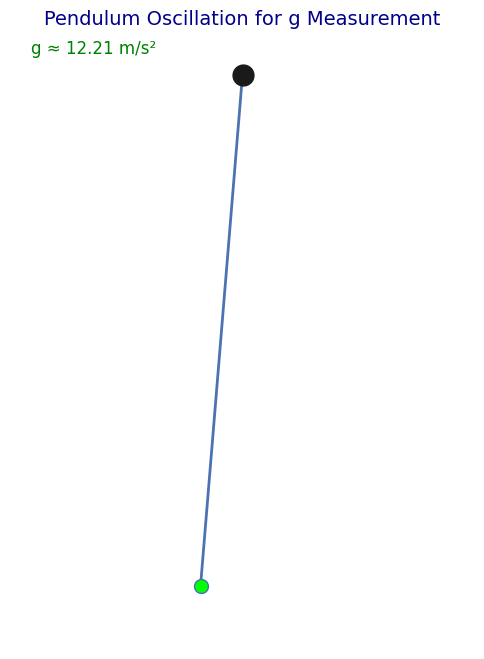

Problem 1
Measuring Earth's Gravitational Acceleration with a Pendulum
Motivation
Gravitational acceleration (\(g\)) is a fundamental constant that affects a wide range of physical phenomena. Accurately measuring \(g\) is crucial for understanding gravitational interactions, designing structures, and conducting experiments in various fields. One classic method for determining \(g\) is through the oscillations of a simple pendulum, where the period of oscillation depends on the local gravitational field.
Task
In this experiment, we will measure the gravitational acceleration (\(g\)) using the oscillations of a pendulum. We will also analyze the uncertainties in the measurements. The goal of the experiment is to calculate \(g\) and understand the impact of uncertainties in these calculations.
Procedure
1. Materials:
- A string of 1 or 1.5 meters in length.
- A small weight (e.g., a bag of coins, sugar bag, or keychain).
- A stopwatch (or a smartphone timer).
- A ruler or measuring tape.
2. Setup:
- Attach the weight to the string and fix the other end to a sturdy support.
- Measure the length of the pendulum (\(L\)), from the suspension point to the center of the weight, using a ruler or measuring tape. Record the resolution of the measuring tool and calculate the uncertainty as half the resolution.
3. Data Collection:
- Displace the pendulum slightly (<15°) and release it.
- Measure the time for 10 full oscillations (\(T\)) and repeat the process 10 times. Record all 10 measurements.
- Calculate the mean time for 10 oscillations (\(T_{mean}\)) and the standard deviation (\(\sigma\)).
- Determine the uncertainty in the mean time using the following formula:
$$ \Delta T = \frac{\sigma}{\sqrt{n}} $$ 
Calculations
1. Calculate the Period:
The period (\(T\)) is related to the gravitational acceleration (\(g\)) by the formula:
Where: - \(T\): Period of the pendulum - \(L\): Length of the pendulum - \(g\): Gravitational acceleration
2. Calculate the Gravitational Acceleration:
Gravitational acceleration (\(g\)) can be calculated from the period using the formula:

3. Propagate the Uncertainties:
The uncertainty in gravitational acceleration can be calculated using the following formula:
Python Code Implementation
Below is the Python code that allows you to calculate the gravitational acceleration using the pendulum's oscillations and calculate the uncertainties in the measurements.
import numpy as np
import matplotlib.pyplot as plt
# Function: Calculate mean and standard deviation
def calculate_mean_and_std(times):
mean_time = np.mean(times)
std_dev = np.std(times)
return mean_time, std_dev
# Pendulum length and measured times for 10 oscillations
L = 1.0 # Length of the pendulum (in meters)
times = [19.2, 19.5, 19.1, 19.4, 19.3, 19.6, 19.0, 19.5, 19.4, 19.2] # Time for 10 oscillations (in seconds)
# Calculate mean time and standard deviation
T_mean, sigma = calculate_mean_and_std(times)
# Calculate gravitational acceleration
g = (4 * np.pi**2 * L) / T_mean**2
# Uncertainty in the mean time
delta_T = sigma / np.sqrt(len(times))
# Uncertainty in gravitational acceleration
delta_g = g * np.sqrt((delta_T / T_mean)**2 + (0.01 / L)**2) # Assuming 1% uncertainty in L
# Display results
print(f'Mean Period (T): {T_mean:.4f} s')
print(f'Uncertainty in Period (Delta T): {delta_T:.4f} s')
print(f'Gravitational Acceleration (g): {g:.4f} m/s²')
print(f'Uncertainty in Gravitational Acceleration (Delta g): {delta_g:.4f} m/s²')
# Visualization of the measurements
fig, ax = plt.subplots()
ax.plot(times, 'bo-', label='Oscillation Times')
ax.axhline(y=T_mean, color='r', linestyle='--', label=f'Mean Period: {T_mean:.4f} s')
ax.set_xlabel('Measurement Number')
ax.set_ylabel('Time (s)')
ax.set_title('Measurement of Pendulum Period')
ax.legend()
plt.show()